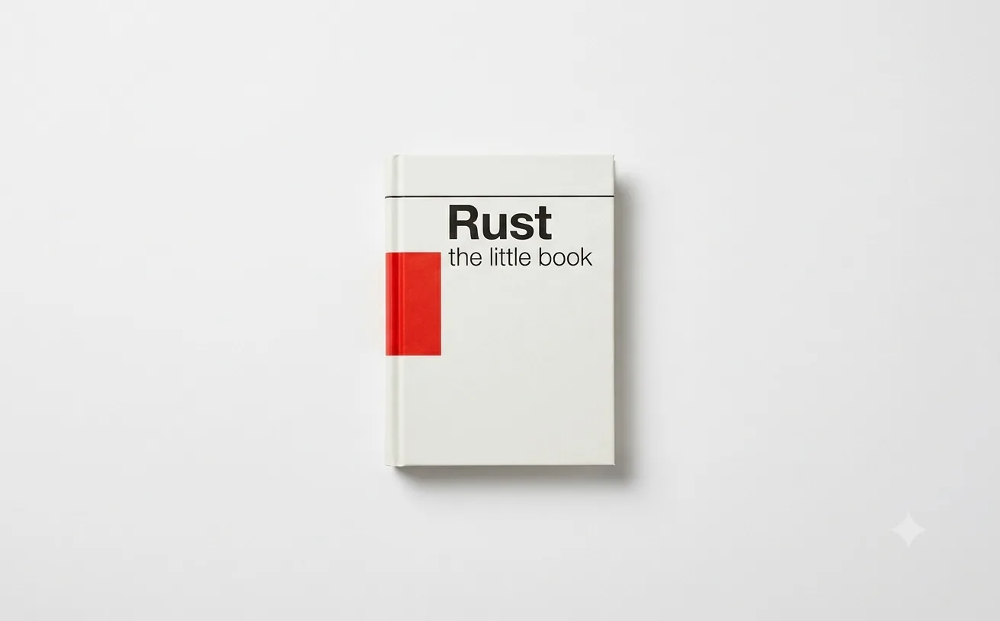

A short, practical introduction
The Little
Rust Book
Systems programming with Rust, told the way you would actually learn it: install the toolchain, write the program, meet the borrow checker, and keep going. Minimal theory, working examples, and a checkpoint at the end of every chapter.

A cover image in the International Typographic Style: a plain white field, a small slim hardback manual lying flat and slightly off-centre, photographed straight down in even diffuse light. The book is matte off-white with a single saturated Swiss-red band across its spine and one thin black rule across the top of its cover; no text or lettering baked into the artwork anywhere. Vast empty white space around the object, a soft contact shadow, nothing else in frame. Restrained, editorial, print-like — think a design annual, not a stock photo. Target size ~1600×1000px, 16:10 landscape; the art is letterboxed into that box, so keep the book centred with generous safe margins at every edge.
Generate this with your image agent, then drop the file here.
Contents
- 00Introduction — why Rust, and how to read this
- 01Getting Started — rustup, Cargo, hello world
- 02The Basics — bindings, types, expressions
- 03Control Flow — if, loops, and match
- 04Functions and Ownership — moves, borrows, slices
- 05Structs, Enums, and Methods — modelling your domain
- 06Collections, Strings, and Errors — Vec, HashMap, Result
- 07Modules, Crates, and Cargo — growing past one file
- 08Traits and Generics — shared behaviour, no cost
- 09Closures and Iterators — the functional half
- 10Smart Pointers and Patterns — Box, Rc, RefCell
- 11Concurrency and Async — threads, channels, futures
- 12Tidbits and Idiomatic Rust — what good code looks like
- 13A Small Project — a CLI, end to end
- —Conclusion — where to go next
- —Cheatsheet — the whole language on one page
How to read this
In order, with a terminal open. Every chapter ends with a Before You Continue — a small thing to type, not a quiz. The chapters are short on purpose; the examples are the content.